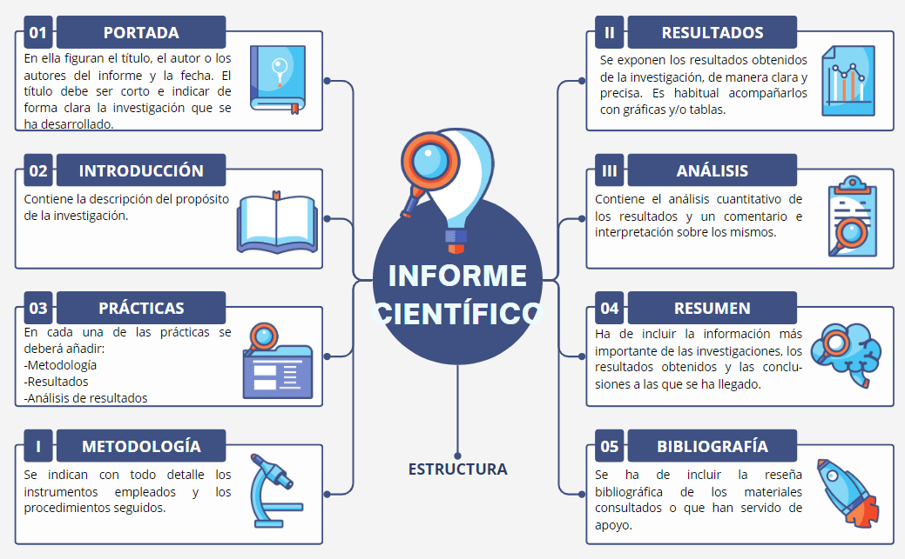

Ahora sí. Demostremos que estamos preparados para la aventura de surcar los océanos en una balsa y aportar conocimiento científico.
Para demostrar que somos dignos de ser elegidos entre la tripulación, debemos aportar un amplio abanico de nuestros conocimientos e inventiva.
Por eso, la tarea que os propongo es un menú sabroso y variado.
Leed detenidamente cada uno de los pasos. Además es importante que optimicemos el trabajo en equipo, sabiendo aportar ideas, escuchar y estudiar concienzudamente las del resto de compañeros y compañeras del equipo y, con espíritu crítico y constructivo, determinar cuáles son las más adecuadas.
No dudéis en pedir ayuda a todos al profesorado del área Científico - Tecnológica.
Veamos el reto en detalle.
Formaréis grupos (de 3 o 4): el profesor/a podrá indicaros cuáles son los componentes de dichos grupos, para que cada miembro aporte su granito de arena especial.
Cada uno de los grupos deberá elaborar un informe científico en el que incluirá cada una de las prácticas vistas a lo largo de este proyecto y que se señalan a continuación.
Consulta a tu profesor o profesora si tienes dudas.
Repartid el trabajo entre los componentes del equipo. Cada uno debe preparar la exposición de alguna práctica, aunque todos debéis conocerlas.
Es aconsejable que ensayéis ante los compañeros y compañeras del grupo para pulir detalles.
¡Hemos de poner en valor nuestro trabajo! Para ello expondremos nuestro proyecto delante de nuestros compañeros y compañeras.

Demuestra que estás preparado o preparada para ser un tripulante.
Debes aportar conocimientos variados.
Lee cada uno de los pasos.
Trabaja en equipo.
Aporta ideas.
Escucha y estudia las ideas del resto de componentes del equipo.
Elige con tu equipo las ideas más adecuadas.
Podéis pedir ayuda al profesorado del área Científico - Tecnológica.
Participaréis en la celebración de la Semana de las Ciencias.
Observa el reto en los siguientes pasos.
Forma grupos de 3 o 4 componentes.
El profesor o profesora os indicará cuáles son los componentes de cada grupo.
Tu equipo y tú vais a diseñar unas prácticas relacionadas con cada materia.
En cada práctica debéis utilizar números diferentes.
Consulta a tu profesor o profesora si tienes dudas.
Repartid el trabajo entre los componentes del equipo.
Cada miembro del equipo debe preparar la exposición de alguna práctica.
Todos los miembros debéis conocer todas las prácticas.
Ensaya la exposición ante los compañeros y compañeras del grupo.
¡Ya estás preparado para la Semana de la Ciencias!
Durante la semana de las ciencias las actividades de cada grupo
se expondrán en el salón de actos del instituto.
Se organizarán horarios para que el resto de cursos vean los trabajos.
Una de las tardes de la Semana de la Ciencias será de puertas abiertas.
Podrá visitar la exposición toda la Comunidad Educativa.
Persona que se encarga de conducir o manejar un barco, un avión o una nave espacial.
Ejemplo:El tripulante del buque era muy joven.
Si necesitas ayuda para preparar la exposición oral, aquí te dejo unos consejos que te serán muy útiles.
Si necesitas ayuda para preparar un informe científico, aquí te dejo la estructura que suelen presentar dichos informes.

Obra publicada con Licencia Creative Commons Reconocimiento No comercial Compartir igual 4.0